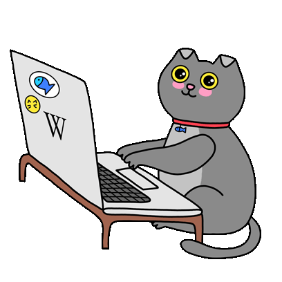

Кейс-интервью
Три кейсбука для тренировки
Сборники кейсов консалтинговых клубов MBA-школ. У каждого кейса есть вводная для кандидата и заметки для ведущего с данными и графиками, поэтому их удобно проходить вдвоём. Все файлы бесплатные, на английском.
MIT Sloan
Массачусетский технологический институт
Самый объёмный и реалистичный: больше 60 кейсов с пометкой, в какой фирме они давались, и больше всего математики. Берите, когда нужны объём практики и сложные расчёты.
Открыть PDFKellogg
Northwestern University
Лучше всех выстроен как программа: кейсы идут по нарастанию сложности и разложены по календарю подготовки. Хорош, чтобы идти по порядку от лёгкого к сложному.
Открыть PDF
Yale
Yale School of Management
Классика, из которой заимствуют более поздние сборники. Особенно хорош для кейсов на прибыльность, выход на рынок и оценку размера рынка.
Открыть PDF